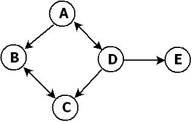

Martin Broadhurst
Graph Data Structures
Contents
Introduction
In this document, I introduce the concept of a graph and describe some ways of representing graphs in the C programming language.
Definitions
Graphs, vertices and edges
A graph is a collection of nodes called vertices, and the connections between them, called edges.
Undirected and directed graphs
When the edges in a graph have a direction, the graph is called a directed graph or digraph, and the edges are called directed edges or arcs.
Here, I shall be exclusively concerned with directed graphs, and so when I refer to an edge, I mean a directed edge.
This is not a limitation, since an undirected graph can easily be implemented as a directed graph by adding edges between connected vertices in both directions.
A representation can often be simplified if it is only being used for undirected graphs, and I'll mention in passing how this can be achieved.
Neighbours and adjacency
A vertex that is the end-point of an edge is called a neighbour of the vertex that is its starting-point.
The first vertex is said to be adjacent to the second.
An example
The following diagram shows a graph with 5 vertices and 7 edges.
The edges between A and D and B and C are pairs that make a bidirectional connection, represented here by a double-headed arrow.

Mathematical definition
More formally, a graph is an ordered pair, G = <V, A>, where V is the set of vertices, and A, the set of arcs, is itself a set of ordered pairs of vertices.
For example, the following expressions describe the graph shown above in set-theoretic language:
V = {A, B, C, D, E}
A = {<A, B>, <A, D>, <B, C>, <C, B>, <D, A>, <D, C>, <D, E>}
Functions
A graph implementation needs a basic set of functions to assemble and modify graphs, and to enumerate vertices, edges and neighbours.
The following functions are provided by each representation.
These are the declarations for the intuitive representation, MBgraph1:
- MBgraph1 * MBgraph1_create(void);
- Create an empty graph
- void MBgraph1_delete(MBgraph1 *graph);
- Delete a graph
- MBvertex * MBgraph1_add(MBgraph1 *graph, const char *name, void *data);
- Add a vertex to the graph with a name, and optionally some data
- MBvertex * MBgraph1_get_vertex(const MBgraph1 *graph, const char *name);
- Retrieve a vertex by name
- void * MBgraph1_remove(MBgraph1 *graph, MBvertex *vertex);
- Remove a vertex
- void MBgraph1_add_edge(MBgraph1 *graph, MBvertex *vertex1, MBvertex *vertex2);
- Create a directed edge between vertex1 and vertex2
- void MBgraph1_remove_edge(MBgraph1 *graph, MBvertex *vertex1, MBvertex *vertex2);
- Remove the directed edge from vertex1 to vertex2
- unsigned int MBgraph1_get_adjacent(const MBgraph1 *graph, const MBvertex *vertex1, const MBvertex *vertex2);
- Determine if there is an edge from vertex1 to vertex2
- MBiterator * MBgraph1_get_neighbours(const MBgraph1 *graph, const MBvertex *vertex);
- Get the neighbours of a vertex
- MBiterator * MBgraph1_get_edges(const MBgraph1 *graph);
- Get all of the edges in the graph
- MBiterator * MBgraph1_get_vertices(const MBgraph1 *graph);
- Get all of the vertices in the graph
- unsigned int MBgraph1_get_neighbour_count(const MBgraph1 * graph, const MBvertex * vertex);
- Get the count of neighbours of a vertex
- unsigned int MBgraph1_get_edge_count(const MBgraph1 * graph);
- Get the count of edges in the graph
- unsigned int MBgraph1_get_vertex_count(const MBgraph1 * graph);
- Get the count of vertices in the graph
Representation of vertices and edges
Vertices
All of the graph representations use the following definition of a vertex:
typedef struct {
char * name;
void * data;
void * body;
MBdeletefn deletefn;
} MBvertex;
Note the body field, which is not of interest to clients, but is used by some representations (Adjacency List and Incidence List) to add per-vertex strucure.
The following functions are provided for working with vertices:
- const char * MBvertex_get_name(const MBvertex *vertex);
- Get the vertex's name
- void * MBvertex_get_data(const MBvertex *vertex);
- Get the data associated with a vertex
Edges
How edges are implemented internally varies with the representation.
In fact, in three representations, Adjacency List, Adjacency Matrix and Incidence Matrix, edges do not exist internally as objects at all.
From the viewpoint of clients however, edges, as enumerated by the iterator returned by the function to retrieve edges, are this structure:
typedef struct {
MBvertex *from;
MBvertex *to;
} MBedge;
The following functions are provided for working with edges:
- const MBvertex * MBedge_get_from(const MBedge * edge);
- Get the vertex that is the starting-point of an edge
- const MBvertex * MBedge_get_to(const MBedge * edge);
- Get the vertex that is the end-point of an edge
Example program
The following program constructs the graph shown in the introduction using the intuitive representation, MBgraph1, and then enumerates the vertices, neighbours and edges:
#include <stdio.h>
#include <graph1.h>
int main(void)
{
MBgraph1 *graph;
MBvertex *vertex;
MBvertex *A, *B, *C, *D, *E;
MBiterator *vertices, *edges;
MBedge *edge;
/* Create a graph */
graph = MBgraph1_create();
/* Add vertices */
A = MBgraph1_add(graph, "A", NULL);
B = MBgraph1_add(graph, "B", NULL);
C = MBgraph1_add(graph, "C", NULL);
D = MBgraph1_add(graph, "D", NULL);
E = MBgraph1_add(graph, "E", NULL);
/* Add edges */
MBgraph1_add_edge(graph, A, B);
MBgraph1_add_edge(graph, A, D);
MBgraph1_add_edge(graph, B, C);
MBgraph1_add_edge(graph, C, B);
MBgraph1_add_edge(graph, D, A);
MBgraph1_add_edge(graph, D, C);
MBgraph1_add_edge(graph, D, E);
/* Display */
printf("Vertices (%d) and their neighbours:\n\n", MBgraph1_get_vertex_count(graph));
vertices = MBgraph1_get_vertices(graph);
while ((vertex = MBiterator_get(vertices))) {
MBiterator *neighbours;
MBvertex *neighbour;
unsigned int n = 0;
printf("%s (%d): ", MBvertex_get_name(vertex), MBgraph1_get_neighbour_count(graph, vertex));
neighbours = MBgraph1_get_neighbours(graph, vertex);
while ((neighbour = MBiterator_get(neighbours))) {
printf("%s", MBvertex_get_name(neighbour));
if (n < MBgraph1_get_neighbour_count(graph, vertex) - 1) {
fputs(", ", stdout);
}
n++;
}
putchar('\n');
MBiterator_delete(neighbours);
}
putchar('\n');
MBiterator_delete(vertices);
printf("Edges (%d):\n\n", MBgraph1_get_edge_count(graph));
edges = MBgraph1_get_edges(graph);
while ((edge = MBiterator_get(edges))) {
printf("<%s, %s>\n", MBvertex_get_name(MBedge_get_from(edge)), MBvertex_get_name(MBedge_get_to(edge)));
}
putchar('\n');
MBiterator_delete(edges);
/* Delete */
MBgraph1_delete(graph);
return 0;
}
Graph representations
There are essentially 5 ways of representing a graph:
The intuitive representation: MBgraph1
What I call the "intuitive" and can also called the "object-oriented" representation is a direct translation of the mathematical definition of a graph into a data type:
typedef struct {
MBset * vertices;
MBset * edges;
} MBgraph1;
- Adding a vertex simply requires adding it to the vertex set.
- Adding an edge simply requires adding it to the edge set.
- Removing vertices and edges simply means removing them from the respective sets.
- To find a vertex's neighbours, search the edge set for edges having the vertex as the from field.
- To determine if two vertices are adjacent, search the edge set for an edge having the first vertex as its from field, and the second vertex as its to field.
- Getting all of the edges is easy; just return an iterator over the edge set.
- For undirected graphs, each edge would be stored only once, and getting neighbours and adjacency testing would look at both vertices.
The edge object would not be from and to but simply first and second, i.e., an unordered pair.
- This is one of the representations where edges exist internally as objects (Incidence List is the other).
- This is most like a sparse Adjacency Matrix, with the edge set holding those pairs that are adjacent, and non-adjacent pairs being absent.
Adjacency List: MBgraph2
The graph is made up of a set of vertices.
Each vertex contains a set of vertices for its neighbours.
typedef struct {
MBset *vertices;
} MBgraph2;
typedef struct {
MBset *neighbours;
} vertex_body;
For the graph shown in the introduction, the sets of neighbours would look like this:
A: {B, D}
B: {C}
C: {B}
D: {A, C, E}
E: {}
- Adding a vertex just means adding it to the vertex set.
- Adding an edge means adding the end-point of it to the starting vertex's neighbour set.
- It is easy to go from a vertex to its neighbours, because the vertex stores them all.
Just return an iterator over them.
This makes the graph argument in the function to retrieve neighbours unnecessary in this implementation.
- Testing for adjacency is easy; just search the first vertex's neighbours for the second vertex.
- Getting all edges is more difficult to implement in this representation, because edges don't exist as objects.
You need to iterate over the neighbours of each vertex in turn, and construct the edge from the vertex and the neighbour.
Adjacency Matrix: MBgraph3
The graph is made up of a set of vertices and a matrix, whose rows and columns are indexed by vertices, and which contains a 1 entry if the vertices are connected.
typedef struct {
MBset * vertices;
MBmatrix * edges;
} MBgraph3;
The adjacency matrix for the graph shown in the introduction would look like this:
ABCDE
A 01010
B 00100
C 01000
D 10101
E 00000
- When adding a vertex, add a row and column to the matrix.
- When removing a vertex, remove its row and column.
As adding and removing rows and columns is expensive, these make the adjacency matrix unsuitable for graphs in which vertices are frequently added and removed.
- Adding and removing edges is easy however, and requires no allocation or deallocation of memory, just setting a matrix element.
- To get neighbours, look along the vertex's row for 1s.
- To determine adjacency, look for a 1 at the intersection of the first vertex's row and the second vertex's column.
- To get the edge set, find all of the 1s in the matrix and construct the edges from the corresponding vertices.
- If the graph is undirected, the matrix will be symmetrical about the main diagonal.
This means that you can drop half of it, making a triangular matrix.
- The vertex set needs to be ordered so that the index number of vertices can be looked up, or the matrix needs to be a 2-d map keyed by the vertices themselves.
- Memory used for edges is a constant |V|2.
The best use of this is a graph that is nearly complete, i.e., has a lot of edges.
- The matrix can be sparse; this relates the memory usage more closely to the number of edges.
It also makes addition and removal of columns easier (no block shifts), but requires renumbering afterwards.
- You can use booleans or bits in the matrix to save memory.
Incidence Matrix: MBgraph4
The graph is made up of a set of vertices and a matrix, as in Adjacency Matrix, but the matrix is vertices × edges, with each column containing two non-zero entries, one for the starting-point vertex and one for the end-point.
typedef struct {
MBset * vertices;
MBmatrix * edges;
} MBgraph4;
The incidence matrix for the graph shown in the introduction looks like this (1 means "from" and 2 means "to"):
A 1100200
B 2012000
C 0021020
D 0200111
E 0000002
- When you add a vertex, you add a row to the matrix.
- When you add an edge, you add a column to the matrix.
- When you remove a vertex, you need to remove all of the columns containing the vertex from the matrix.
- Getting the edges means iterating over the columns and constructing the edges from the two values.
- To find neighbours, look for 1s in the vertex's row, and in each such column look for the 2 value, which is the neighbour.
- To determine adjacency, find a column containing a 1 in the starting-point vertex's row, and a 2 in the end-point's row.
- For an undirected graph, you have one column per edge, and just the value 1 for "connected", so each column contains two 1s.
Incidence List: MBgraph5
There is a set of vertices as in Adjacency List, but each vertex stores a list of the edges that it is the starting-point of, rather than neighbours.
typedef struct {
MBset * vertices;
} MBgraph5;
typedef struct {
MBset *edges;
} vertex_body;
For the graph shown in the introduction, the sets of edges would look like this:
A: {<A, B>, <A, D>}
B: {<B, C>}
C: {<C, B>}
D: {<D, A>, <D, C>, <D, E>}
E: {}
- Adding a vertex just means adding it to the vertex set.
- Adding an edge means adding it to its starting vertex's edge set.
- Finding if two vertices are adjacent requires searching the first vertex's edge set for an edge containing the second vertex as its to field.
- Getting the neighbours requires retrieving them from the pairs in the set of edges for the vertex.
- Getting the edge set requires enumerating each of the vertices' edge sets in turn.
- You can store the edges in the graph object as well as in each vertex.
Source code
The following archives contain the full source code, example program and build instructions: